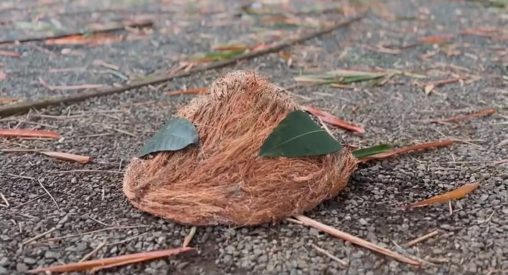

Discover our handmade hat inspired by traditional farmers' hats and created using coconut coir.
Explore Our ProductCoconut is an important agricultural crop in the Philippines. Its husk can be processed into coconut coir, a natural fiber used in different products. For our project, we used coconut coir to create Saklobihin, a handmade farmer-inspired hat. This project shows one creative way to use a coconut by-product in making a new product.
Our design is inspired by the appearance of farmers' hats. However, Saklobihin is our group's own school project and is not presented as an authentic traditional hat. Through this project, we recognize the importance of agriculture and explore how natural materials can be used creatively.
Background source: DOST-PCAARRD — Coconut Industry Profile
View Our MaterialsWe gathered the materials needed to create our coconut coir hat. Each material has a role in helping us make our farmer-inspired product.
The main natural fiber used in making our farmer-inspired hat. Its fibers make up the main part of our product.
These tools were used to cut, attach, and fasten the materials during the hat-making process.
Cardboard was used to help form and support the shape of the hat, while leaves were added as decorations to enhance its farmer-inspired design.
Watch our procedural video to see how we create our farmer-inspired hat using coconut coir.
This is our completed farmer-inspired hat made using coconut coir. It represents our group's creativity and effort in turning a natural material into a handmade product.

Saklobihin is a student project that explores the use of coconut coir in making a farmer-inspired hat. Through this online exhibit, we present our product, materials, and production process.
Department of Science and Technology–Philippine Council for Agriculture, Aquatic and Natural Resources Research and Development. (n.d.). Coconut industry profile. Read source
Department of Agriculture, Bureau of Agriculture and Fisheries Standards. (2018). Philippine National Standard: Coconut fiber (coir)—Grading and classification (PNS/BAFS 21:2018). Read source
Philippine Coconut Authority. (2025). Coconut farmers to benefit from PBBM-approved revised CFIDP 2024–2028. Read source
Philippine Council for Agriculture and Fisheries. (2021). Philippine coconut industry roadmap 2021–2040. Read source